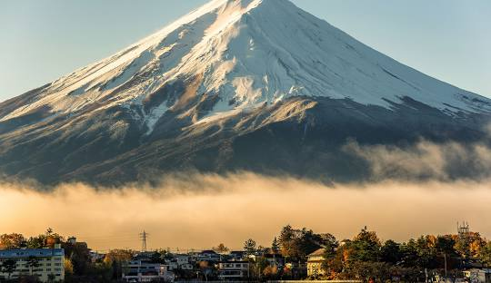
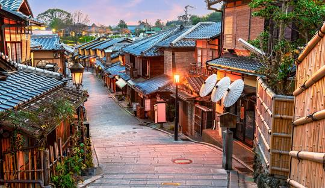
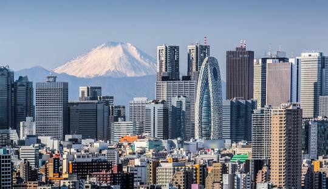
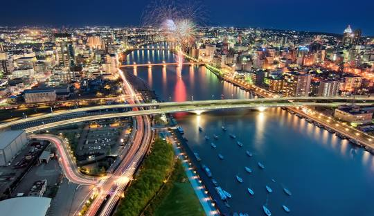
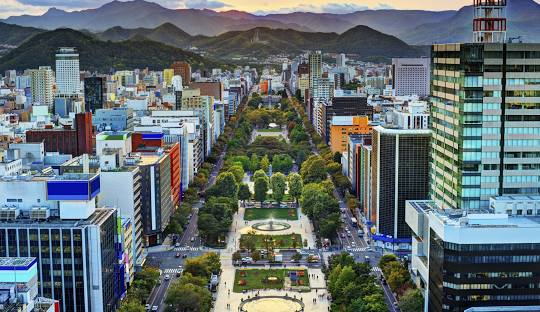

Відкрийте для себе чудові місця в Японії
Пориньте в атмосферу Японії, де стародавні традиції поєднуються з сучасними технологіями. Досліджуйте мальовничі храми, жваві мегаполіси та приховані куточки природи, які залишать незабутні враження

Ласкаво просимо до Одіго!
Одіго – ваш надійний путівник Японією! Тут ви знайдете надихаючі маршрути по кращих місцях.
ДІЗНАТИСЯ БІЛЬШЕ
Ваш особистий гід Японією
Відкрийте для себе Японію з докладними маршрутами, корисними порадами та цікавими фактами!
ДІЗНАТИСЯ БІЛЬШЕ
Просування місцевого бізнесу
Просування у соціальних мережах – ведення Instagram, Facebook, TikTok, залучення локальної аудиторії.
ДІЗНАТИСЯ БІЛЬШЕНадихніться на наступну подорож
ПОДИВИТИСЯ ВСЕ
Mount Fuji
Mount Fuji
Фудзія́ма (Фудзі, Фудзісан, яп. 富士山 Фудзісан) — діючий стратовулкан на японському острові Хонсю, за 90 кілометрів на південний захід від Токіо. Висота вулкана — 3776 м (пік Кенґаміне, найвища точка Японії). Наразі вулкан вважається слабоактивним, останнє виверження відбулося у 1707–1708 роках. Вулкан має майже ідеальну конічну форму та вважається священним, є об'єктом туризму, а також релігійного паломництва буддійських і синтоїстських культів. Фудзі протягом століть була популярною темою в японському мистецтві. Фудзі є приватною власністю та належить синтоїстському Великому храму Хонґу Сенґен (富士山本宮浅間大社 — Фудзісан Хонґу Сенґен Тайся), у якому зберігається дарча від сьогуна Токуґави Хідетади, датована 1609 роком.

Kyoto
Kyoto
Кіото — колишня столиця Японії на острові Хонсю, відома своїми численними буддійськими храмами, які вважаються архітектурними пам’ятками, садами, імператорськими палацами, синтоїстськими святинями та старовинними дерев’яними будинками. У місті варто спробувати традиційний обід кайсэкі з кількома змінами страв і відвідати район Ґіон, де мешкають гейші — жінки, які розважають своїх гостей піснями, танцями та бесідою.

Tokyo
Tokyo
Токіо — столиця Японії, гамірне місто, у якому сучасні хмарочоси з неоновим підсвічуванням поєднуються з традиційними храмами. Серед дерев розташований пишно оздоблений синтоїстський храм Мейдзі, відомий своїми високими воротами. А в обширних громадських садах розміщується Імператорський палац. У місті багато музеїв. У Токійському національному музеї представлені твори класичного мистецтва, а в музеї Едо-Токіо можна побачити копію театру кабукі.

Niigata
Niigata
Ніїґата — велике портове місто на узбережжі Японського моря. Відоме смачною японською кухнею та морськими делікатесами. Щороку тут проходить фестиваль манґи. Авіаквитки до Ніїґати на всі авіакомпанії, що виконують туди рейси, ви можете придбати на нашому сайті. Прямим авіасполученням Ніїґата з містами України не пов’язана. Авіаквитки Київ — Ніїґата на найзручніші рейси з пересадками доступні через Франкфурт, Мілан, Мюнхен, Гельсінкі, Відень, Дубай, Бангкок.

Sapporo
Sapporo
Саппоро — столиця префектури Хоккайдо, розташованої на однойменному острові на півночі Японії. Місто відоме своїми пивоварнями, гірськолижними курортами та щорічним Сніговим фестивалем, незмінним атрибутом якого є величезні крижані скульптури. При Музеї пива, експозиція якого присвячена історії пивоваріння в Саппоро, відкрита таверна, де проходять дегустації. У межах міста розташовано кілька трамплінів і гірськолижних трас, створених для зимових Олімпійських ігор 1972 року. Неподалік від міста знаходиться знаменитий гірськолижний курорт Нісеко.
Префектура у фокусі: Тотторі
Префектура Тотторі (Totori-ken) - префектура Японії, розташована в регіоні Тюгоку острова Хонсю. Префектура Тотторі - найменш населена префектура Японії з населенням 538 525 осіб (2023 рік) та географічною площею 3 507,13 квадратних кілометрів (1 354,11 квадратних миль)
ДИВИТИСЯ ПРЕФЕКТУРУРекомендований район: Арасіяма в Кіото
Арасіяма Парк Наканосіма - це спокійний притулок, який чудово поєднує природну красу із культурною глибиною. Його близькість до річки Кацура та знакового мосту Тогецукіо посилює його історичну привабливість, роблячи його ідеальним місцем для тих, хто хоче поринути у суть Кіото.
ДИВИТИСЯ РАЙОНСьогодні найкращі місця для відвідування

NAGOYA
Замок Нагоя (яп. 名古屋城 нагоя-дзе:) - древній японський замок, розташований у центрі міста Нагоя (префектура Айті, Японія). Побудований у 1612 році як головний замок гілки роду сьогунів Токугава з провінції Оварі. До 1871 служив політико-адміністративним центром князівства Оварі. У 1872—1930 роках перебував під керуванням уряду Японської імперії, після цього перейшов у власність міста Нагоя.
ДІЗНАТИСЯ БІЛЬШЕ
NIIGATA
Етіго-Юдзава та інші лижні курорти, рисові тераси Хосітоге та інші красиві рисові поля, найсмачніші рис та саке, феєрверк Нагаока – один із трьох найбільших у Японії, парк Такада – одне з трьох найкращих місць милування нічною сакурою, Садо – острів з найбагатшою історією та культурою.
ДІЗНАТИСЯ БІЛЬШЕ
OSAKA
Дотонборі - це одне з кращих міських місць, яке варто побачити вночі. Дотонборі ніколи не закривається, а більшість ресторанів та магазинів у ньому працює цілодобово
ДІЗНАТИСЯ БІЛЬШЕ
SAITAMA
Храм Хікава - синтоїстський храм, розташований в Омія-ку, Сайтама, префектура Сайтама, Японія. Це одне з двох святилищ, претендують на звання ітіномія колишньої провінції Мусасі. Головний фестиваль святині проводиться щорічно 1 серпня.
ДІЗНАТИСЯ БІЛЬШЕ
UENO
Парк Уено - один із п'яти найстаріших громадських парків Японії. Він найбільш відомий зоопарком Уено, безліччю музеїв і вражаючим цвітінням сакури навесні. Парк відкрився для публіки в 1873 році, його офіційна назва Уено Онсі-Коен, що означає Імператорський подарунковий парк Уено.
ДІЗНАТИСЯ БІЛЬШЕ
SHIBUYA
Район Сібуя відомий як один із головних центрів моди Токіо, особливо для молодих людей, а також як чільне місце нічного життя в Токіо.
ДІЗНАТИСЯ БІЛЬШЕ